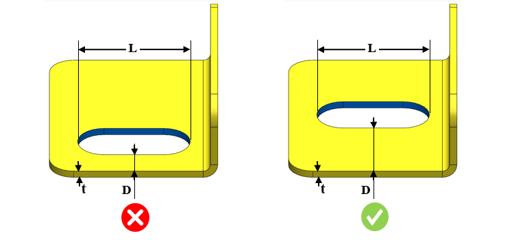
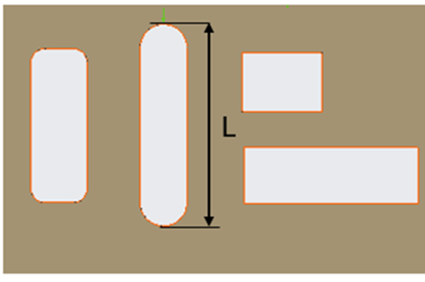

部品エッジと平行スロットとの最小距離をスロット長さで割った比は、ユーザー指定の値以上である必要があります。
スロットは、変形や破断、またはその両方を防止するために、部品エッジから十分に離して配置する必要があります。
一般的なガイドラインとして、部品エッジから平行スロットまでの最小距離は、スロット長さの少なくとも0.2倍以上とする必要があります。
ルールUIでは、材料の一覧が Map Material から読み込まれ、ユーザーは材料およびその値を設定できます。
材料とその値を設定した後、ユーザーは Ctrl+M コマンドを使用して、ルールUI内で材料グループおよびグレード別に設定済み材料の一覧をフィルタして表示できます。同じキー（Ctrl+M）を使用してフィルタを解除できます。

ここでは、
D = 部品エッジから平行スロットまでの最小距離
L = スロット長さ
t = 板厚
注記：
面取り付きスロットもサポートされています。
以下の形状のスロットがサポートされています。

ここで、
L = スロットの長さ